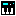
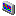
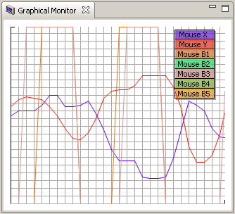
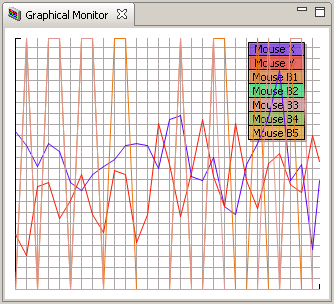
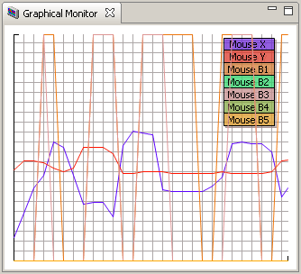
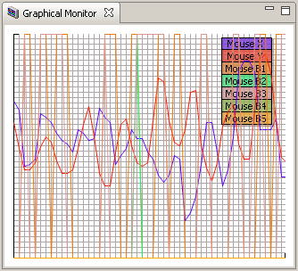
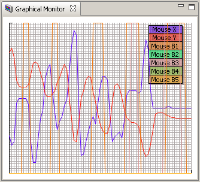

Monitors
I. Monitor
The Monitor displays all active sources (sensors, gestures, mouse).
-
Display
The type of the sensor, the name and the current value of the sensor will be shown
in the display.
Changes of the the type and the name can be done by clicking the "spanner" icon.
By clicking the "spanner" icon it is also possible to calibrate each
individuell sensor.
-
Tool bar options
-
Set Global MIDI (  )
Click this option to activate und deactivate the global MIDI sending (on/off).
-
Show Graphical Monitor (  )
Click this option to show the Graphical Monitor view.
II. Graphical Monitor View
The Graphical Monitor is a real-time graph display for all active sources
(senors, gestures, mouse).
To assure distinction all graphs are displayed in
different colors.
A displayed graph legend helps you to distinguish the different sources.
Like all other JGlove views it is possible to adjust the height and width of the Graphical
Monitor view.
The number of the displayed values and the interval values of the Graphical Monitor
can be adjusted in the preferences.
Some examples for different settings:

Image: Graph Example 1 - value: 30, interval: 10

Image: Graph Example 2 - value: 30, interval: 100

Image: Graph Example 3 - value: 30, interval: 50

Image: Graph Example 4 - value: 60, interval: 50

Image: Graph Example 5 - value: 80, interval: 10